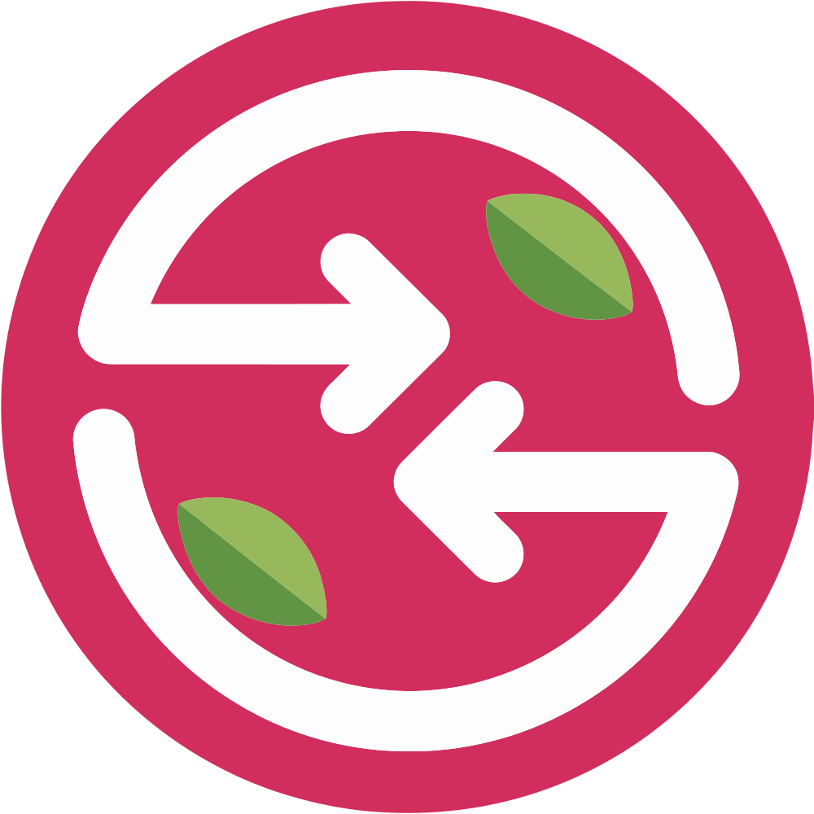

Install latest release
Run the Pi installer. It downloads the newest ARM64 Debian package from GitHub Releases.
curl -fsSL https://eladbg-code.github.io/rquickshare-pi/install.sh | bash
RQuickShare PiRaspberry Pi OS ARM64 Quick Share
RQuickShare Pi is a Raspberry Pi focused fork of RQuickShare for nearby file sharing with Android Quick Share devices. It is built around real Pi hardware, Bluetooth discovery, mDNS, WebKitGTK, and the tray-first desktop workflow Raspberry Pi OS users expect.
Drop files to send
Install
Unlike general desktop builds, this fork targets Raspberry Pi OS 64-bit on ARM64 first.
Run the Pi installer. It downloads the newest ARM64 Debian package from GitHub Releases.
curl -fsSL https://eladbg-code.github.io/rquickshare-pi/install.sh | bashThe app runs from the system tray and can start hidden at boot.
You can still download the `.deb` yourself and install it with apt.
Open releasesPi Stack
Advertises the receiver path expected by Android Quick Share while keeping the Pi desktop workflow stable.
Uses local network discovery for the actual transfer path once devices find each other.
Autostart can keep the app quietly in the tray until the user explicitly opens the window.
Build and runtime claims are checked on Raspberry Pi hardware, not only on generic x86 CI.
Wiki
Pi-focused setup, behavior, and troubleshooting notes in one clean place.
Use the hosted installer on Raspberry Pi OS 64-bit. It finds the latest ARM64 `.deb` release and installs it with apt:
curl -fsSL https://eladbg-code.github.io/rquickshare-pi/install.sh | bashAfter install, the launcher should appear under Accessories on Raspberry Pi OS. Manual packages remain available on GitHub Releases.
When autostart is enabled, RQuickShare Pi starts hidden in the tray after login. The main window should only appear when the user selects Show from the tray menu.
The app keeps running on close by default so Bluetooth and mDNS discovery stay available.
Set the Pi to Always visible, keep Bluetooth enabled, and make sure the phone is near the Pi. Android Quick Share uses Bluetooth for discovery and a local network path for transfer.
If the phone cannot see the Pi, wait a few seconds after opening Quick Share, then toggle visibility off and back on in the app.
On Samsung phones, the Share with Apple devices mode can stop Android-to-Pi discovery from appearing.
Use this path on the phone:
Settings > Connected devices > Quick Share > Share with Apple devices > OffAfter turning that off, retry sending from the phone to the Pi.
Clone the repository on a Raspberry Pi OS ARM64 machine, install the native dependencies, then build the core library and Tauri app.
cd core_lib
cargo test
cargo build
cd ../app/main
pnpm install --frozen-lockfile
pnpm check
pnpm build:debugUseful checks when discovery or receiving fails:
bluetoothctl show
rfkill list bluetooth
systemctl status bluetooth --no-pager
systemctl status avahi-daemon --no-pager
ip addrIf the app creates an error report, attach it to a GitHub issue with what you were trying to send.
RQuickShare Pi is based on RQuickShare by Martin ANDRE and contributors.
This fork preserves the upstream GPL-3.0 license, copyright notices, credits, and project history. Original RQuickShare copyrights remain with their respective authors.
RQuickShare Pi changes are maintained by EladBG. This software is provided without warranty under the GPL-3.0 license.
RQuickShare Pi is an independent community fork. It is not affiliated with, endorsed by, sponsored by, or officially supported by Google, Android, Samsung, Ko-fi, or the original RQuickShare maintainers.
Open source support
RQuickShare Pi stays free and open-source under GPL-3.0. If this Pi-focused work helps you, optional donations help cover testing, packaging, and maintenance time.
Donations never unlock private features, support priority, warranty, or a different license. The project remains usable, copyable, modifiable, and redistributable under its GPL terms.
Support is entirely optional, but it helps keep real ARM64 testing and Raspberry Pi OS polish moving forward.
Donate on Ko-fi